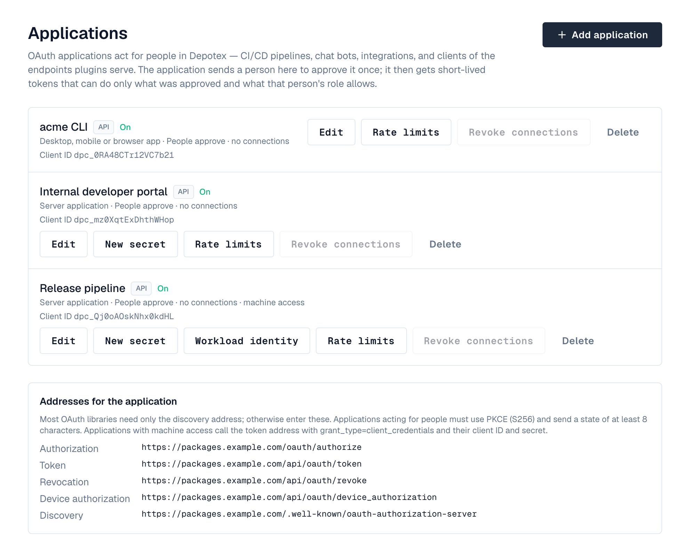
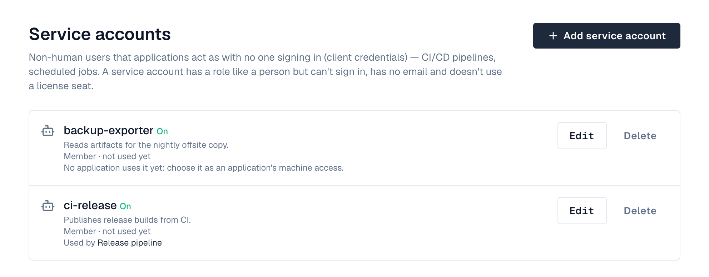

1. Overview
Depotex is an OAuth 2.0 authorization server. An application — a CI/CD server, a chat bot, an integration — sends a person to Depotex; they sign in and allow it; the application then gets short-lived access tokens and refresh tokens that act for that person. Nobody has to create or paste a personal API token, and the person can disconnect the application at any time. Pro license or higher.
A token never does more than three things all allow: the scopes the person approved, the scopes the application is still allowed, and the person's current role. Changing the person's role, narrowing the application's scopes, suspending the person or turning off the application applies to tokens already issued, at once.
2. Which way to connect
| Situation | Use | License |
|---|---|---|
| An integration or tool acts for a person, who approves it in the browser | Authorization code (the approval screen) | Pro |
| A command-line tool or a device without a browser acts for a person | Device sign-in: the tool shows a code, the person enters it at /oauth/device | Pro |
| A pipeline or scheduled job acts with no person | Machine access: a service account and client credentials (client secret) | Pro |
| The same, with no secret stored in the pipeline | Workload identity: the CI system's own identity token | Enterprise |
| An AI application (Claude, Cursor, an IDE agent) uses a plugin's tools for a person | An AI agent application and the plugin's MCP address | Pro |
| An AI agent with no person, such as a CI job, uses a plugin's tools | An AI agent with machine access, asking for one MCP server (Headless AI agents) | Pro |
| An AI agent that can't sign in with OAuth at all | An MCP key, if an administrator allows them (less secure) | Pro |
3. Register an application
Under Settings → Access management → Applications (oauth_apps:manage, super admins). Set the Depotex address under Settings → General first: applications reach Depotex at it.
The page lists the applications on the left (find one by name or client ID, or show only API or endpoint applications) and opens the selected one beside the list: its connections, when it was last used and its client ID, what it may do, sign-in, tokens and, for server applications, its secret and machine access. Turn it on or off, change its approval, device sign-in, token lifetimes and machine access there and select Save; Edit name, scopes and redirects opens the full form. OAuth addresses at the top shows the addresses applications use, with a copy button each.

- Add application — Select Add application and enter its name and description (people see them on the approval screen).
- Choose the kind — API for applications that call the Depotex API (everything on this page except the next section). AI agent for AI applications that use plugins' MCP tools (see AI agents). The kind can't be changed later.
- Choose the type — Server application for anything that runs on a server and can keep a secret (CI servers, back ends): it gets a client secret. Desktop, mobile or browser app for command-line tools and single-page apps: no secret; PKCE protects the exchange. The type can't be changed later.
- Redirect addresses — One per line, exactly as the application sends them. https:// only, except http://localhost or http://127.0.0.1 (any port) for apps on the person's own computer; localhost and 127.0.0.1 count as the same. An AI agent that's a desktop app (no secret) may also use the app's own scheme, such as Cursor's cursor://anysphere.cursor-mcp/oauth/callback; schemes a browser runs (javascript:, data:, file: and the like) are always refused.
- What it may ask for — The permissions (scopes) the application can request. Permissions that create credentials (API tokens) or manage applications can't be chosen.
- Approval — People approve (default): each person sees an approval screen the first time. Pre-approved: no approval screen, for everyone or for members of chosen groups; people still sign in and see the connection under Connected apps.
- Token lifetimes — Access tokens: 15 minutes to 1 day (default 1 hour). Refresh tokens: 1 day to 1 year (default 90 days), renewed each time the application refreshes.
- Copy the credentials — Depotex shows the Client ID and, for server applications, the Client secret. The secret is shown only once; New secret replaces it (the old one stops working; tokens already issued keep working).
The page lists the addresses to configure in the application. Most OAuth libraries need only the discovery address, https://<your Depotex address>/.well-known/oauth-authorization-server.
4. Device sign-in for command-line tools
For tools that run in a terminal or on a device without a browser (RFC 8628). Turn on Allow device sign-in on the application (usually a Desktop, mobile or browser app).
- The tool asks for a code — It calls /api/oauth/device_authorization with its client ID (and secret, for server applications) and the scopes it wants.
- The person enters it — The tool shows a code like BCDF-GHJK and the address https://<your Depotex address>/oauth/device (or a link that fills the code in). The person signs in, checks the code matches, sees what the tool may do and selects Allow.
- The tool gets tokens — Meanwhile it polls the token address with grant_type=urn:ietf:params:oauth:grant-type:device_code every 5 seconds; once allowed it receives an access token and a refresh token, like any connection.
curl https://depotex.example.com/api/oauth/device_authorization -d client_id="$CLIENT_ID" -d scope="depot:read"
# → {"device_code": "dpo_dc_…", "user_code": "BCDF-GHJK", "verification_uri": "https://depotex.example.com/oauth/device", "interval": 5, "expires_in": 600}
curl https://depotex.example.com/api/oauth/token -d grant_type=urn:ietf:params:oauth:grant-type:device_code \
-d device_code="$DEVICE_CODE" -d client_id="$CLIENT_ID"
# authorization_pending / slow_down until approved, then the tokens; access_denied or expired_token end it
- Codes expire after 10 minutes and work once.
- The approval screen is always shown for device sign-in, even when the application is pre-approved or was allowed before, and it asks the person to check the code: someone could otherwise pass on a code and get access to the account.
- The connection then appears under Profile → Connected apps like any other.
5. Machine access: service accounts
For pipelines and scheduled jobs where nobody can click Allow, link a server application to a service account: a non-human user with a role, which can't sign in, has no email and doesn't use a license seat. The application then gets tokens with the client credentials grant, using only its client ID and secret, and acts as the service account.

- Create the service account — Under Settings → Access management → Service accounts (oauth_apps:manage), select Add service account, name it (for example pipeline-bot) and choose its role: Member or Organization admin. It can never be a super admin.
- Link it to an application — Edit a server application (or create one) and choose the service account under Machine access (no person).
- Get tokens — The application calls the token address with grant_type=client_credentials. It gets an access token (no refresh token: it asks again when the token expires).
curl -u "$CLIENT_ID:$CLIENT_SECRET" https://depotex.example.com/api/oauth/token \
-d grant_type=client_credentials -d scope="depot:read" # scope optional: all of the app's by default- The token can do what the application was given and the service account's role allows, no more.
- Turning the service account off stops its applications' tokens at once; deleting it also removes the applications' machine access.
- The service accounts page shows which applications use each account and when it was last used. Its actions appear in the audit log as the service account, with via: oauth:<application>.
6. Workload identity: no secret in the pipeline
Instead of storing the client secret in the pipeline, let the CI system prove who it is with its own short-lived identity token: GitHub Actions, GitLab CI, a Kubernetes service account or any OpenID Connect issuer. Depotex checks the token's signature with the issuer's published keys, its audience, and claims you choose (the repository, the branch), then gives the application a token acting as its service account. Enterprise license; the application needs machine access (a service account).
- Open the rules — On Settings → Applications, select Workload identity on the application.
- Add a trust rule — Choose the CI system: GitHub Actions and GitLab fill in the issuer (https://token.actions.githubusercontent.com, https://gitlab.com; use your own address for self-managed GitLab, and the cluster's issuer for Kubernetes).
- Set the audience — What the pipeline asks its token to be for; the Depotex address is a good choice.
- Set conditions — Claims the token must have, all of them, with * as a wildcard: for GitHub repository = my-org/my-repo and ref = refs/heads/main; for GitLab project_path and ref; for Kubernetes sub = system:serviceaccount:<namespace>:<name>. At least one condition must name something specific, otherwise every pipeline on that issuer would be trusted.
The pipeline then asks its CI for an identity token with that audience and exchanges it (the dialog shows a ready-made GitHub Actions step):
curl https://depotex.example.com/api/oauth/token -d grant_type=client_credentials \
-d client_id="$CLIENT_ID" \
-d client_assertion_type=urn:ietf:params:oauth:client-assertion-type:jwt-bearer \
-d client_assertion="$CI_ID_TOKEN"
- A token that doesn't match is refused with invalid_client; the server log says which rule refused it and why (wrong audience, a claim that doesn't match), for troubleshooting.
- Each exchange is in the audit log with the workload (for example repo:my-org/my-repo:ref:refs/heads/main), and the application's actions show via: oauth:<application> (<workload>).
- The client secret keeps working next to the rules; create a new one and don't hand it out if you want only workload identity.
- Depotex must be able to reach the issuer over https to read its keys (GitHub's and GitLab.com's are public).
- With an Enterprise license the discovery document lists private_key_jwt among the token endpoint's authentication methods, with the accepted signing algorithms, so OAuth libraries know they can send a client_assertion.
7. Endpoints
| Endpoint | Address |
|---|---|
| Authorization | /oauth/authorize |
| Token | /api/oauth/token (client secret as HTTP Basic or form fields; none for desktop/browser apps). Grants: authorization_code, refresh_token, and client_credentials for apps with machine access (AI agents add resource) |
| Revocation (RFC 7009) | /api/oauth/revoke |
| Device authorization (RFC 8628) | /api/oauth/device_authorization; people enter codes at /oauth/device |
| Introspection (RFC 7662) | /api/oauth/introspect |
| Discovery (RFC 8414) | /.well-known/oauth-authorization-server |
| Your MCP keys | GET / POST /api/me/mcp-keys, DELETE /api/me/mcp-keys/{id} (making one needs mcp_keys:create and a signed-in session) |
| Every MCP key (oauth_apps:manage) | GET /api/oauth/mcp-keys, DELETE /api/oauth/mcp-keys/{id}; the switch: GET / PUT /api/oauth/mcp-keys/settings {"allowed"} |
- Grant types: authorization code with PKCE (S256, required for every application), refresh token, client credentials (machine access) and device code (device sign-in).
- Send a state of at least 8 characters, and at least one scope; scopes are permission names separated by spaces, e.g. users:read depot:read.
- Access tokens start with dpo_at_, refresh tokens with dpo_rt_. Call the API with Authorization: Bearer dpo_at_…, like an API token.
- Each refresh returns a new refresh token; the old one stops working. Using an old refresh token again is treated as theft: every token of that connection is revoked.
- An authorization code works once and for 10 minutes; using it twice revokes what it issued.
# Exchange the code (server application)
curl -u "$CLIENT_ID:$CLIENT_SECRET" https://depotex.example.com/api/oauth/token \
-d grant_type=authorization_code -d code="$CODE" \
-d redirect_uri=https://ci.example.com/oauth/callback -d code_verifier="$VERIFIER"
# Use the access token
curl -H "Authorization: Bearer $ACCESS_TOKEN" https://depotex.example.com/api/users8. AI agents
An AI agent application lets an AI application use the tools that plugins serve over MCP, for the person who signs it in. The quickest way is Connect an AI app in the plugin's setup guide or in its panel on the plugin's page, which asks only which AI app it is (see Connect an AI app); everyone signed in finds the connection details in their profile settings under Access → Connect an AI agent. To set every option yourself, register one under Settings → Access management → Applications with the kind AI agent:
- Plugins it may use: every plugin with AI tools (including plugins activated later), or only the ones you choose.
- Permissions: the tool permissions it may ask for, grouped by plugin. Permissions of a plugin that isn't running stay listed so you can remove them.
- Redirect addresses: as for other applications. AI applications on the person's own computer use http://127.0.0.1 or http://localhost with any port.
- Server addresses: the page lists each plugin's MCP address, https://<your Depotex address>/mcp/<plugin>, to copy into the AI application.
What its tools may do: Read only (default) or Read and change, which lets it use write tools when everything else allows them. Only plugins:admin can choose Read and change; the list marks those applications Can change Depotex, and the approval screen lists permissions that change things apart, under a warning. Lowering it takes effect at once.
The AI application finds how to sign in from the address itself: an unsigned request is answered with a pointer to /.well-known/oauth-protected-resource/mcp/<plugin>. The person signs in and sees "<application> wants to use <server> for you" with the permissions it asks for. Each sign-in names exactly one plugin address (the resource parameter), and the tokens it gets (dpm_…) work only there: never on the Depotex API, and never at another plugin. Refreshing keeps the same binding.
AI agents can't use device sign-in. Machine access and workload identity are only for agents that run with no person: see the next section.
9. Headless AI agents
A CI job or a server-side agent can use MCP tools without a person signing in. Give a Server application of the kind AI agent a service account, and optionally workload identity. Its token request must name exactly one MCP server with resource:
curl -u "$CLIENT_ID:$CLIENT_SECRET" https://depotex.example.com/api/oauth/token \
-d grant_type=client_credentials \
-d resource=https://depotex.example.com/mcp/depotex-mcp- The token works only at that server, never on the Depotex API, and acts as the service account with its role.
- A server the application may not use, or a missing resource, is refused with invalid_target; permissions that aren't that server's with invalid_scope.
- Turning the service account off stops its tokens at once.
10. MCP keys
For AI agents that can't sign in with OAuth at all, a person can make an MCP key (dpm_key_…): a fixed key that acts as them at one plugin's MCP address. Keys are less secure than OAuth: anyone who copies one can use it until it expires. They are off by default.
- Allow them — A super admin (oauth_apps:manage) turns on Allow MCP keys (less secure) in the plugin's MCP keys section under Settings → Access management → Applications, through a warning. Turning it off stops every key at once without deleting them.
- Make a key — People with the mcp_keys:create permission (organization admins by default) go to the MCP keys section of their profile settings → New, signed in (not with an API token). They choose the plugin, the permissions, how long it lasts and, optionally, the IP addresses it may be used from. The key is shown once, with the server address.
- Use it — The agent sends Authorization: Bearer dpm_key_… to https://<your Depotex address>/mcp/<plugin>. The key works nowhere else, including the Depotex API.
- A key acts as its owner with their current role: if the owner is turned off or loses access, so does the key.
- Every key expires: at most MCP_KEY_MAX_DAYS (90) days, MCP_KEY_DEFAULT_DAYS (30) by default.
- Keys are read-only unless write tools are allowed for AI agents and the person ticks a second confirmation. The plugin's MCP mode and tool switches still apply.
- Keys are marked Less secure everywhere. While any work, the plugin's MCP keys section on the Applications page shows a banner with how many and lists them with their owners; the owner or a super admin can revoke one.
- Changes made through a key are recorded in the audit log with via: mcp-key:<plugin>/<key name>. Erasing a person's data deletes their keys.
11. Rate limit
Each AI application connection or MCP key may make MCP_RATE_LIMIT requests a minute (120 by default) across every MCP server, counted together on every server with Redis (per server without it). Over the limit, requests get 429 mcp_rate_limited with Retry-After. Administrators can give an AI app, a user, an organization or a role a different budget, and each plugin limits how much of it one agent may use: see Rate limits. The Rate limits button on an AI app in Settings → Applications opens its overrides.
12. What people see
When an application sends someone to Depotex they sign in if needed (password or single sign-on), then see the application's name and description, what it will be allowed to do, and where they'll be sent back. Allow returns them to the application; Deny returns them with an access_denied error. They're asked again only if the application asks for more, or after they disconnected it.
Profile → Connected apps lists the applications a person allowed, what each may do, when it was connected and last used. Revoke disconnects one; its tokens stop working at once.
13. Managing connections
- Revoke connections on an application disconnects everyone; they must approve it again.
- Turning an application off stops all its tokens until it's turned back on; Delete removes it and every connection.
- Suspending or deactivating a person, or turning off their directory, stops their applications' tokens.
Tokens obtained through an application don't pass through single sign-on again: Require single sign-on applies when the person approves, not to later refreshes. Shorten the refresh token lifetime, or revoke connections, if that matters for an application.
14. Events, policies and audit
| Event | When |
|---|---|
| oauth.client.create, oauth.client.update, oauth.client.delete | An application is registered, changed (including a new secret, enabling or disabling) or removed. The payload says its kind (app or mcp) and, for AI agents, the plugins it may use and whether its tools may change Depotex (mcp_access) |
| oauth.consent.grant | A person allows an application (or it's pre-approved for them), or allows more scopes. Org policies can refuse it — for example only allow certain applications, or forbid users:write |
| oauth.consent.revoke | A connection ends: revoked by the person, by an administrator, or because the application was deleted |
| oauth.federation.create, oauth.federation.update, oauth.federation.delete | A workload identity trust rule is added, changed (issuer, audience, conditions, on/off) or removed |
| service_account.create, service_account.update, service_account.delete | A service account is created, renamed, gets another role, is turned off or on, or is deleted. Org policies can, for example, forbid organization-admin service accounts |
| mcp.key.create, mcp.key.revoke | A person makes an MCP key, or a key is revoked by its owner or an administrator. Policies can refuse them, for example forbid keys that can change Depotex |
| ai_agents.mcp_keys.update | MCP keys are allowed or stopped for the installation |
Audit entries record registrations, secret changes, approvals and revocations, and every action an application takes for someone is recorded with via: oauth:<application name>. MCP keys add mcp_keys:create, mcp_keys:revoke and mcp_keys:update_settings.